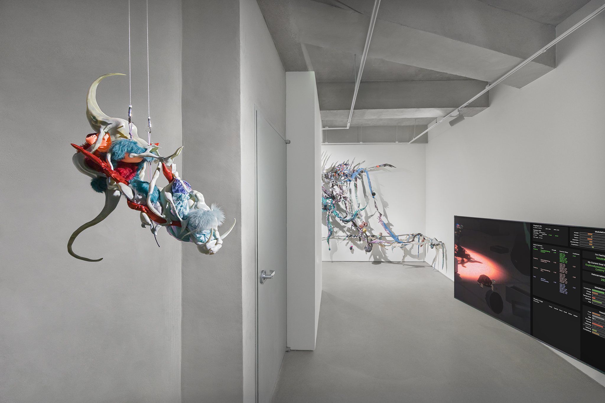

Social Contribution
cync

Nothing is Complete, exhibition view, cync, Seoul, 2026, courtesy of cync
The revenues of D'ART directly support cync (cync.art), a nonprofit hybrid institution in Seoul that we founded and operate. Through its exhibition space and ongoing cultural projects, cync works to create meaningful change within the art world, giving emerging artists a serious platform, free from commercial pressure. It is our contribution to the ecosystem that sustains us.